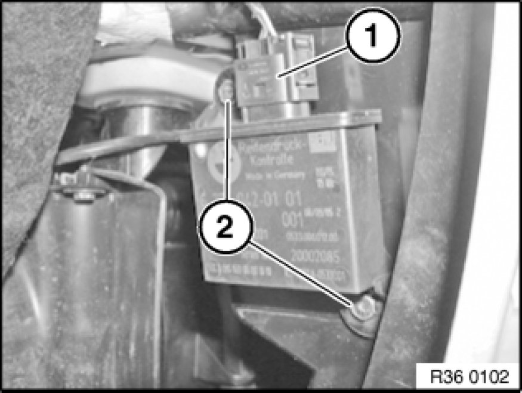

Removing and Installing/Replacing an RDC Trigger Transmitter (Rear)
36 11 523 - Removing and installing/replacing an RDC trigger transmitter (rear)

Necessary preliminary tasks:
- Partially detach rear wheel arch trim Service and Repair

Disconnect plug connection (1).
Release screws (2) and remove trigger transmitter.